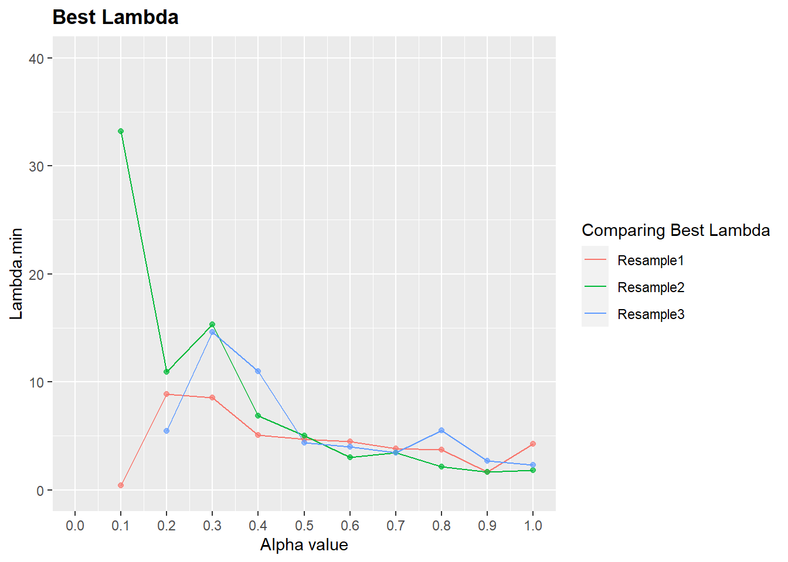

Chapter 2 Multitask mvtboost for predicting multiple behaviors from placental transcriptome –
suppressPackageStartupMessages({
library(glmnet) # Loads glmnet package
library(caret)
library(plyr)
library(gganimate)
library(gapminder)
library(cowplot)
library(directlabels)
library(gifski)
library(transformr)
library(RUncommon)
library(tidyr)
library(broom)
})## Warning: package 'transformr' was built under R version 4.0.3## Warning: package 'broom' was built under R version 4.0.3#working.dir="C:/Users/grrompala/Desktop" # working directory
#setwd(working.dir)
## Import counts and metadata as matrix [make sure there are no NAs]
counts <- read.csv("counts.csv",header=T,row.names=1)
meta <- as.matrix(read.csv("meta.csv",header=T,row.names=1))
counts <- as.matrix(t(counts[,rownames(meta)]))Set seed for reproducibility
Determine Training and Test Sets: making 3 training:test partitions here
Y.cont <- meta[,1] # replace with variable of choice
names(Y.cont) <- rownames(meta)
train.parts <- createDataPartition(Y.cont,p=.8,list=TRUE,times=3)Cross-validation training
options(width = 60)
out <- lapply(train.parts,function(L){
## Cross-validation training
list.of.fits <- list()
for (i in 0:10) {
## Here's what's going on in this loop...
## We are testing alpha = i/10. This means we are testing
## alpha = 0/10 = 0 on the first iteration, alpha = 1/10 = 0.1 on
## the second iteration etc.
## First, make a variable name that we can use later to refer
## to the model optimized for a specific alpha.
## For example, when alpha = 0, we will be able to refer to
## that model with the variable name "alpha0".
fit.name <- paste0("alpha", i/10)
## Now fit a model (i.e. optimize lambda) and store it in a list that
## uses the variable name we just created as the reference.
list.of.fits[[fit.name]] <-
cv.glmnet(counts[L,], meta[L,],nfolds=10, type.measure="mse", alpha=i/10, family="mgaussian")
}
return(list(FITS=list.of.fits))
})2.1 compare best alpha across train-test partitions
new <- lapply(out,function(L){
lambda.min <- vector()
for(x in 1:11){
x<- L$FITS[[x]]$lambda.min
lambda.min <- append(lambda.min,x)
}
return(lambda.min)
})
# Final lambda.se
NAMES <- names(out$Resample1$FITS)
lambda <- ldply(new,rbind)
colnames(lambda)[2:12] <- NAMESInspect the minimum lambda values for each alpha.
#resample.summary$ID <- rep(1:10,times=6,each=1)
LAMBDA <- gather(lambda,key="Alpha",value ="Lambda",-.id )
LAMBDA$Alpha <- stringr::str_replace_all(LAMBDA$Alpha,"alpha","")
LAMBDA$Alpha <- as.numeric(LAMBDA$Alpha)
p <- ggplot(LAMBDA, aes(x=Alpha, y=Lambda,group=as.factor(.id),color=as.factor(.id))) +
geom_line()+
geom_point(alpha = 0.7, show.legend = FALSE) +
scale_x_continuous(breaks=seq(0,1,by=0.1))+
ylim(0,40)+
scale_color_discrete(name="Comparing Best Lambda")+
labs(x="Alpha value",y="Lambda.min",title="Best Lambda")+
# transition_reveal(Alpha) + ## If you want to animate
theme(
plot.title = element_text(face="bold")
)
# If you want to animate
#animate(p, duration = 8, fps = 50, width = 700, height = 500, renderer = gifski_renderer(),end_pause = 100)
p## Warning: Removed 4 row(s) containing missing values
## (geom_path).## Warning: Removed 4 rows containing missing values
## (geom_point).
Now we see which alpha (0, 0.1, … , 0.9, 1) does the best job predicting the values in the Testing dataset.
results <- data.frame()
predicted <- list()
ticker <- 1
mine <- lapply(out,function(L){
for (i in 0:10) {
fit.name <- paste0("alpha", i/10)
x <- train.parts[[ticker]]
## Use each model to predict 'y' given the Testing dataset
predicted[[fit.name]] <- predict(L$FITS[[fit.name]], s=L$FITS[[fit.name]]$lambda.min,newx=counts[-x,]) # lamda.1se gives me same values for all)
dat.ANX <- data.frame(predicted[[fit.name]])[,1]
dat.REG <- data.frame(predicted[[fit.name]])[,2]
## Calculate the Mean Squared Error...
mse.ANX <- mean((meta[-x,1]-dat.ANX)^2)
cor.ANX <- cor(meta[-x,1],dat.ANX)
mse.REG <- mean((meta[-x,2]-dat.REG)^2)
cor.REG <- cor(meta[-x,2],dat.REG)
## Store the results
temp <- data.frame(alpha=i/10, mse.ANX=mse.ANX,mse.REG=mse.REG,cor.ANX=cor.ANX,cor.REG=cor.REG)
results <- rbind(results, temp)
}
ticker <- ticker+1
results
})
mine## $Resample1
## alpha mse.ANX mse.REG cor.ANX cor.REG
## 1 0.0 157.8251 0.2165756 0.040650580 0.341055253
## 2 0.1 153.6521 0.3739259 0.176143832 -0.017137171
## 3 0.2 151.7553 0.2571316 0.004829493 -0.139928415
## 4 0.3 148.8318 0.2534180 -0.009199660 -0.167371783
## 5 0.4 152.2548 0.2593742 -0.006625847 -0.170220235
## 6 0.5 150.7424 0.2548932 -0.005101073 -0.111918250
## 7 0.6 148.4390 0.2512730 0.020025030 -0.073011263
## 8 0.7 148.4599 0.2505917 0.027812628 -0.040937734
## 9 0.8 146.5394 0.2485602 0.067237517 -0.004105224
## 10 0.9 156.2203 0.2510810 0.054945504 0.053600964
## 11 1.0 146.8357 0.2460869 NA NA
##
## $Resample2
## alpha mse.ANX mse.REG cor.ANX cor.REG
## 1 0.0 139.71511 0.2060069 0.3788515 0.497241026
## 2 0.1 144.66249 0.2411485 0.4993212 -0.210051029
## 3 0.2 123.97687 0.2395855 0.6204862 0.043585700
## 4 0.3 146.75561 0.2400418 NA NA
## 5 0.4 131.06258 0.2442514 0.5634437 -0.086731526
## 6 0.5 122.11802 0.2427125 0.6148530 0.001088167
## 7 0.6 95.37157 0.2297153 0.7142508 0.212751398
## 8 0.7 113.52932 0.2400026 0.6381474 0.089176697
## 9 0.8 86.45743 0.2252484 0.7253725 0.262772761
## 10 0.9 76.54971 0.2177523 0.7449105 0.321737577
## 11 1.0 83.71461 0.2146711 0.7261630 0.352089566
##
## $Resample3
## alpha mse.ANX mse.REG cor.ANX cor.REG
## 1 0.0 104.23937 0.1433687 0.6443336 0.677447286
## 2 0.1 146.95428 0.2432270 NA NA
## 3 0.2 68.67570 0.2006735 0.8475218 0.494744890
## 4 0.3 146.95428 0.2432270 NA NA
## 5 0.4 146.95428 0.2432270 NA NA
## 6 0.5 105.43017 0.2409735 0.7432870 0.086508980
## 7 0.6 110.14788 0.2435018 0.7353679 0.016053736
## 8 0.7 106.83652 0.2443347 0.7481970 0.002752367
## 9 0.8 146.95428 0.2432270 NA NA
## 10 0.9 100.26308 0.2478571 0.7596765 -0.047267614
## 11 1.0 91.84076 0.2523996 0.7597162 -0.090806251Get top coefficients
bb <- coef(out$Resample1$FITS$alpha0.1,s=out$Resample1$FITS$alpha0.1$lambda.min)
ANX.COEF <- tidy(bb$STAI_TTO)
REG.COEF <- tidy(bb$REG)## row column value
## 1 (Intercept) 1 5.290904793
## 2 FAM71E1 1 0.003913448
## 3 SLC12A9-AS1 1 0.003758733
## 4 SMC1B 1 0.003063004
## 5 RAB33A 1 0.002953823
## 6 SMG1P6 1 0.002689962
## 7 TTC4 1 0.002635864
## 8 RN7SKP80 1 0.002518529
## 9 HCG25 1 0.002492880
## 10 SMC5-AS1 1 0.002382001## row column value
## 1 (Intercept) 1 23.74961672
## 2 SLC12A9-AS1 1 0.03831273
## 3 MIR320E 1 0.02864717
## 4 SMG1P6 1 0.02571635
## 5 TMEM110-MUSTN1 1 0.02477292
## 6 DLEU2L 1 0.02366440
## 7 URAHP 1 0.02339192
## 8 SMC1B 1 0.02310373
## 9 MAP1LC3B2 1 0.02304964
## 10 ELOA-AS1 1 0.02207229## row column value
## 1 PKD2L2 1 -0.004160983
## 2 Z73965.1 1 -0.004033330
## 3 MAP1LC3B2 1 -0.003156425
## 4 CADM2 1 -0.002682255
## 5 PMS2P6 1 -0.002630137
## 6 ALG1L2 1 -0.002607562
## 7 NODAL 1 -0.002595879
## 8 NOXRED1 1 -0.002311842
## 9 IQUB 1 -0.002070080
## 10 CD160 1 -0.001994387## row column value
## 1 PABPC1P4 1 -0.02855627
## 2 SMC5-AS1 1 -0.02671643
## 3 GLIDR 1 -0.02238008
## 4 PMS2P6 1 -0.02209330
## 5 SLIT1 1 -0.02095026
## 6 LINC02606 1 -0.01951022
## 7 RN7SKP80 1 -0.01770279
## 8 ATE1-AS1 1 -0.01617622
## 9 MYB 1 -0.01551098
## 10 VPS33B 1 -0.01518836